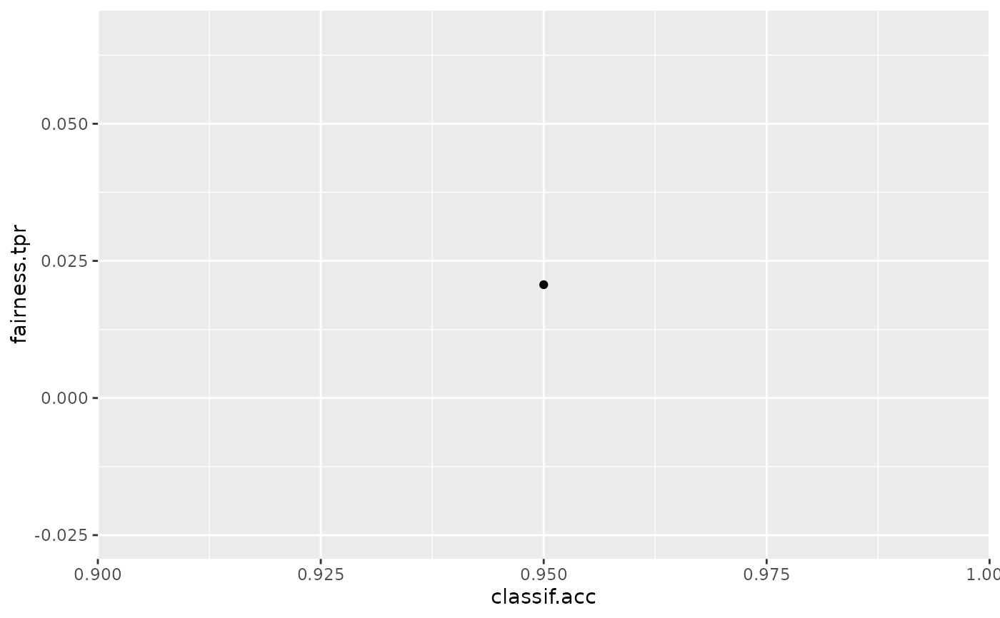
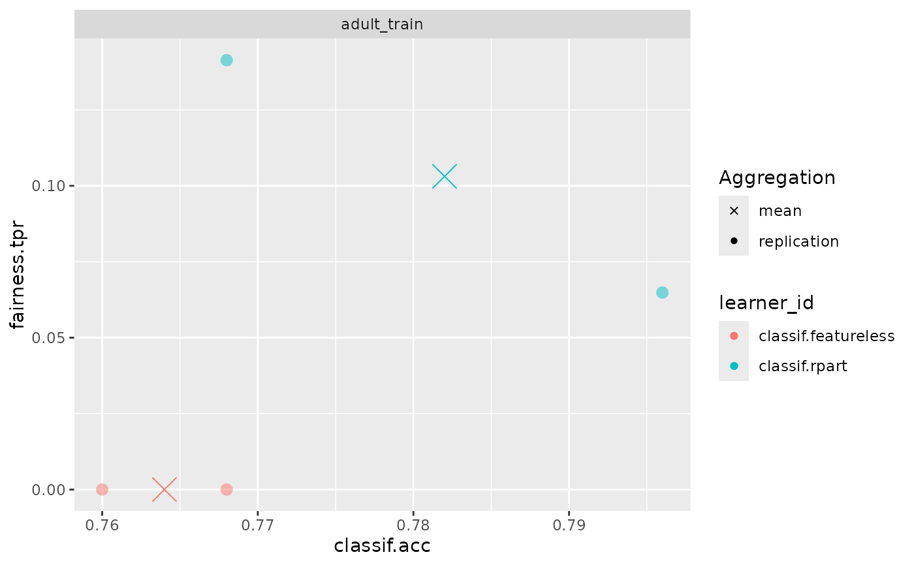

Plot Fairness Accuracy Trade-offs
Source:R/fairness_accuracy_tradeoff.R
fairness_accuracy_tradeoff.RdProvides visualization wrt. trade-offs between fairness and accuracy metrics across learners and resampling iterations. This can assist in gauging the optimal model from a set of options along with estimates of variance (through individual resampling iterations).
Arguments
- object
(PredictionClassif | BenchmarkResult | ResampleResult)
The binary class prediction object that will be evaluated.If provided a PredictionClassif. Then only one point will indicate the accuracy and fairness metrics for the current predictions. Requires also passing a Task.
If provided a ResampleResult. Then the plot will compare the accuracy and fairness metrics for the same model, but different resampling iterations as well as the aggregate indicated by a cross.
If provided a BenchmarkResult. Then the plot will compare the accuracy and fairness metrics for all models and all resampling iterations. Points are colored according to the learner_id and faceted by task_id. The aggregated score is indicated by a cross.
- ...
Arguments to be passed to methods. Such as:
fairness_measure(Measure)
The fairness measures that will evaluated. Default measure set to bemsr("fairness.fpr")accuracy_measure(Measure)
The accuracy measure that will evaluated. Default measure set to be msr("classif.acc").task(TaskClassif)
The data task that contains the protected column, only required when the class of object is (PredictionClassif)
Protected Attributes
The protected attribute is specified as a col_role in the corresponding Task():<Task>$col_roles$pta = "name_of_attribute"
This also allows specifying more than one protected attribute,
in which case fairness will be considered on the level of intersecting groups defined by all columns
selected as a predicted attribute.
Examples
library("mlr3")
library("mlr3learners")
library("ggplot2")
# Setup the Fairness measure and tasks
task = tsk("adult_train")$filter(1:500)
learner = lrn("classif.ranger", predict_type = "prob")
fairness_measure = msr("fairness.tpr")
# Example 1 - A single prediction
learner$train(task)
predictions = learner$predict(task)
fairness_accuracy_tradeoff(predictions, fairness_measure, task = task)

# Example2 - A benchmark
design = benchmark_grid(
tasks = task,
learners = lrns(c("classif.featureless", "classif.rpart"),
predict_type = "prob", predict_sets = c("train", "test")),
resamplings = rsmps("cv", folds = 2)
)
bmr = benchmark(design)
fairness_accuracy_tradeoff(bmr, fairness_measure)
